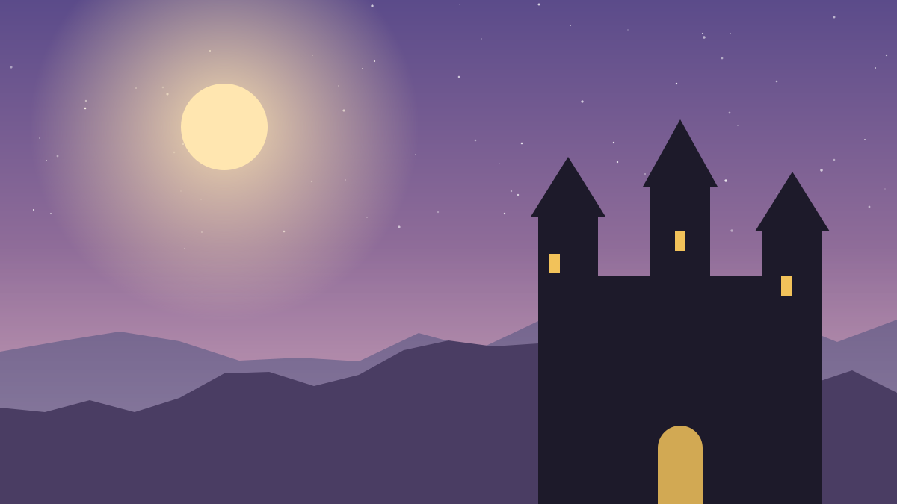
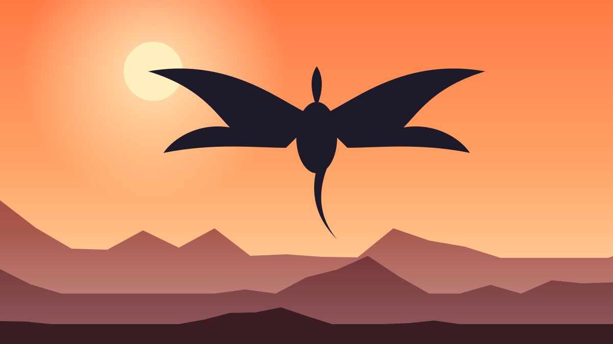
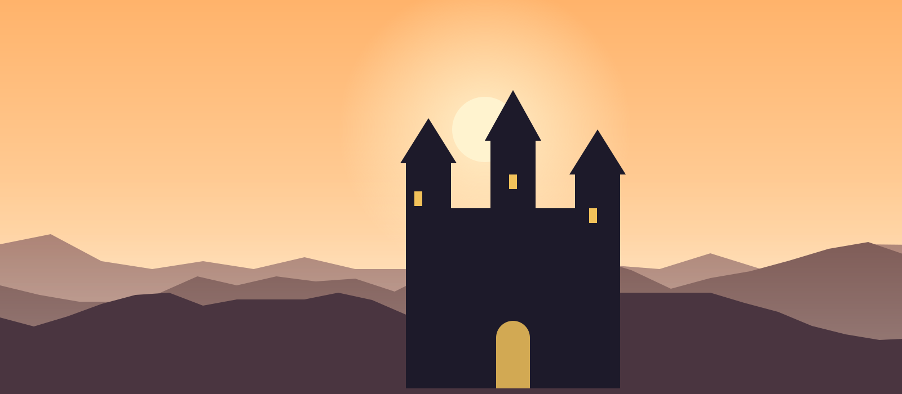
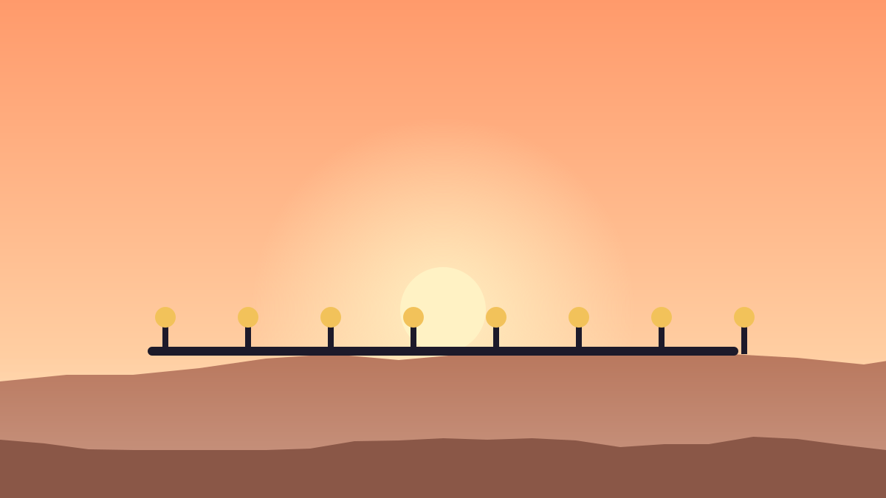

Accueil › Donjons & Raids
Donjons et raids de WoW Forever
Tous les donjons de Classic reviennent, accompagnés de neuf nouveaux donjons à 5 joueurs du niveau 13 au 60. Les niveaux bas sont dans les Royaumes de l'Est, les plus hauts en Kalimdor.

| Donjon | Niveaux | Zone | Type |
|---|
Niveaux indicatifs issus de la bêta, susceptibles d'évoluer.
Raids

9 déc. 2026Ouverture des raids
Les premiers raids débloquent un peu plus d'un mois après la sortie.

NouveauRaids 10 et 20 joueurs
En plus des formats de Classic, des raids pour groupes plus réduits.

2027Encore des donjons
Deux nouveaux donjons prévus au printemps et deux autres avec la mise à jour d'été.